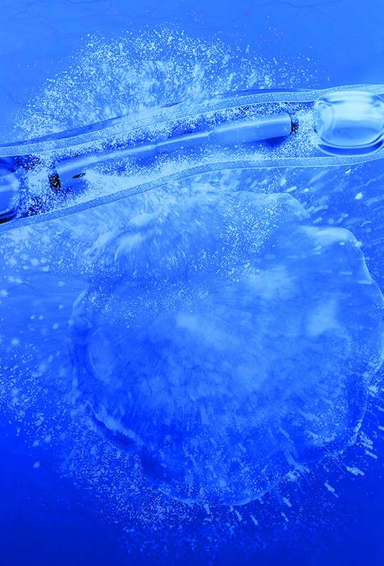
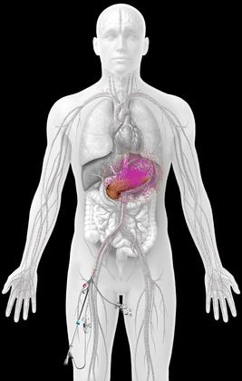
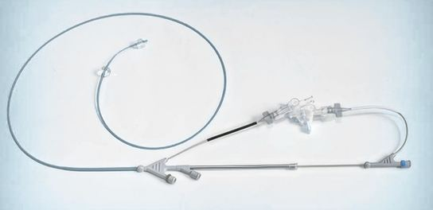
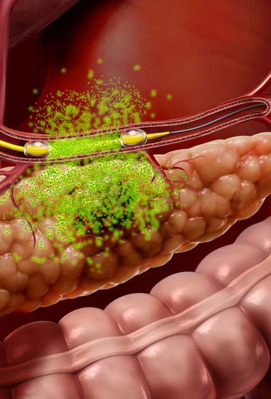

A commercial-stage targeted oncology company. FDA-cleared RenovoCath® enables its patented TAMP™ platform.
~$400M
Mgmt.-estimated peak annual U.S. device sales
900+
RenovoCath procedures to date
Illustrative image
Circulates through the bloodstream, exposing the entire body to the drug.
Designed to deliver chemotherapy directly near the tumor, potentially reducing total body exposure.



TIGeR-PaC is evaluating investigational intra-arterial gemcitabine (IAG) vs. standard IV chemotherapy in locally advanced pancreatic cancer.
78/86
Trial events observed, Aug 11, 2026
1H 2027
Trial completion expected
2H 2027
Topline data expected
Primary endpoint: overall survival.
Forward-looking: trial timing, 2026 guidance, market estimate. IAG is investigational, not FDA-approved. See SEC filings.